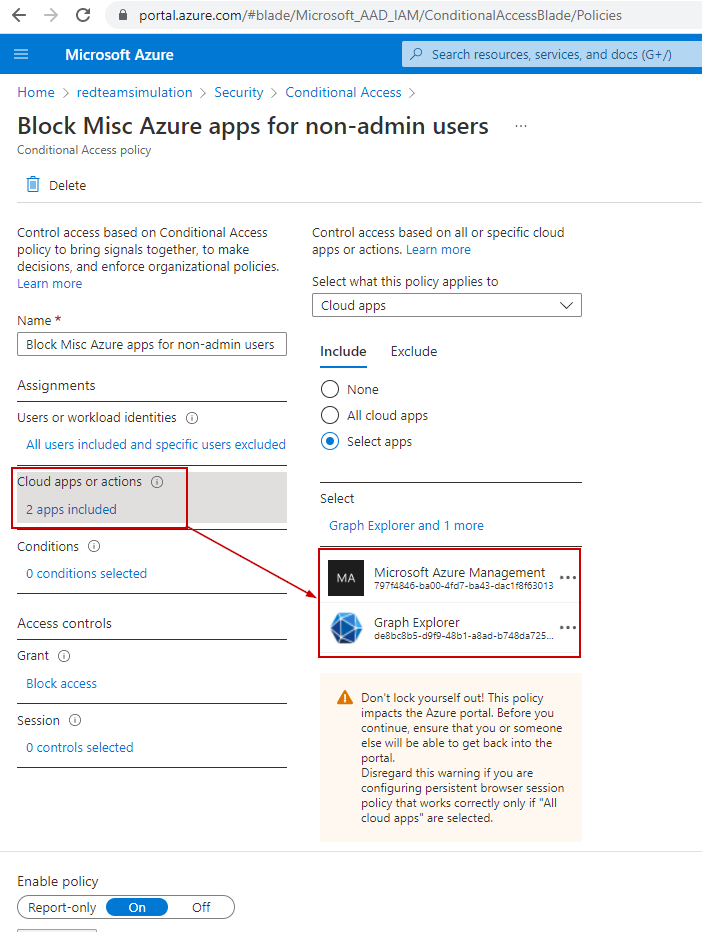
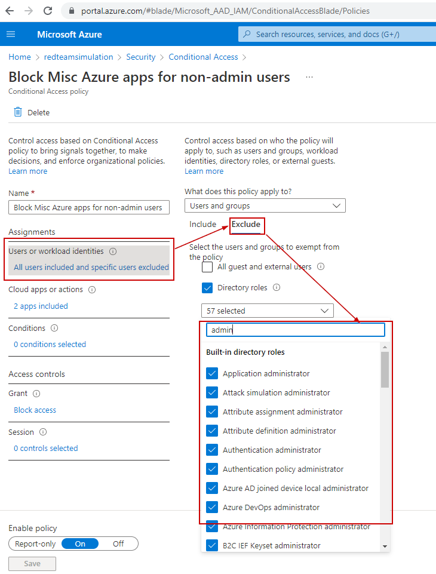

Block Miscellaneous Services in Azure
Blocking the "Graph Explorer" app and services under the "Microsoft Azure Management" app.
We would want to restrict access to various Azure services to non-admin users because they don't need that access.
Graph Explorer is one of the apps we want to disable access to unless It's a business requirement not to do so.
Some of the other services fall under the umbrella of an in-built Azure App named "Microsoft Azure management".
So, if we block access to this app for non-admin users, the services under them will be unavailable to non-admin users.
Below are the services under "Microsoft Azure management".
- Azure portal
- Azure Resource Manager provider
- Classic deployment model APIs
- Azure PowerShell
- Azure CLI
- Azure DevOps
- Azure Data Factory portal
- Azure Event Hubs
- Azure Service Bus
- Azure SQL Database
- SQL Managed Instance
- Azure Synapse
- Visual Studio subscriptions administrator portal
Below is the PowerShell script to create the conditional access policy which would restrict access to the above services to all users except admins.
# Connect to AzureAD and get current logged in user
$TenantDetails = $NULL
$CurrentlyLoggedInUser = $NULL
$OnMicrosoftDomain = $NULL
$connection = $NULL
try {
$AzureADSession = Get-AzureADCurrentSessionInfo
$CurrentlyLoggedInUser = $AzureADSession.Account | select -ExpandProperty Id
Write-Host "Already connected to : $AzureADSession.TenantDomain as $CurrentlyLoggedInUser"
$CurrentUserId = Get-AzureADUser -Filter "UserPrincipalName eq '$CurrentlyLoggedInUser'" | select -ExpandProperty ObjectId
}
catch [Microsoft.Open.Azure.AD.CommonLibrary.AadNeedAuthenticationException] {
Write-Host "You're not connected to AzureAD. Connect now...";
Write-Host "You're not connected to AzureAD";
$connection = Connect-AzureAD
$AzureADSession = Get-AzureADCurrentSessionInfo
$CurrentlyLoggedInUser = $AzureADSession.Account | select -ExpandProperty Id
Write-Host "Connected to : $AzureADSession.TenantDomain as $CurrentlyLoggedInUser"
$CurrentUserId = Get-AzureADUser -Filter "UserPrincipalName eq '$CurrentlyLoggedInUser'" | select -ExpandProperty ObjectId
}
$AdminRolesIds = Get-AzureADMSROleDefinition | Where-Object -FilterScript {$_.DisplayName -like '*Administrator'}| select -ExpandProperty Id
# Create the conditional access policy to block access from all OFAC countries to all apps for all users except the currently logged in user
$conditions = New-Object -TypeName Microsoft.Open.MSGraph.Model.ConditionalAccessConditionSet
$conditions.Applications = New-Object -TypeName Microsoft.Open.MSGraph.Model.ConditionalAccessApplicationCondition
$conditions.Applications.IncludeApplications = "797f4846-ba00-4fd7-ba43-dac1f8f63013", "de8bc8b5-d9f9-48b1-a8ad-b748da725064"
$conditions.Users = New-Object -TypeName Microsoft.Open.MSGraph.Model.ConditionalAccessUserCondition
$conditions.Users.IncludeUsers = "all"
$conditions.Users.ExcludeRoles = $AdminRolesIds
$controls = New-Object -TypeName Microsoft.Open.MSGraph.Model.ConditionalAccessGrantControls
$controls._Operator = "OR"
$controls.BuiltInControls = "block"
New-AzureADMSConditionalAccessPolicy -DisplayName "Block Misc Azure apps for non-admin users" -State "Enabled" -Conditions $conditions -GrantControls $controls
Write-output "Conditional Access Policy created.\r"
We can see the conditional access policy has been created to block ALL users(except those in admin roles) from accessing services included under "Microsoft Azure Management"
|  |  |
Tests
Graph explorer access denied to a non-admin user
Access is denied to the non-admin user.
Azure portal access denied to a non-admin user
Azure Portal (part of the "Microsoft Azure Management" app) Access is denied to the non-admin user.